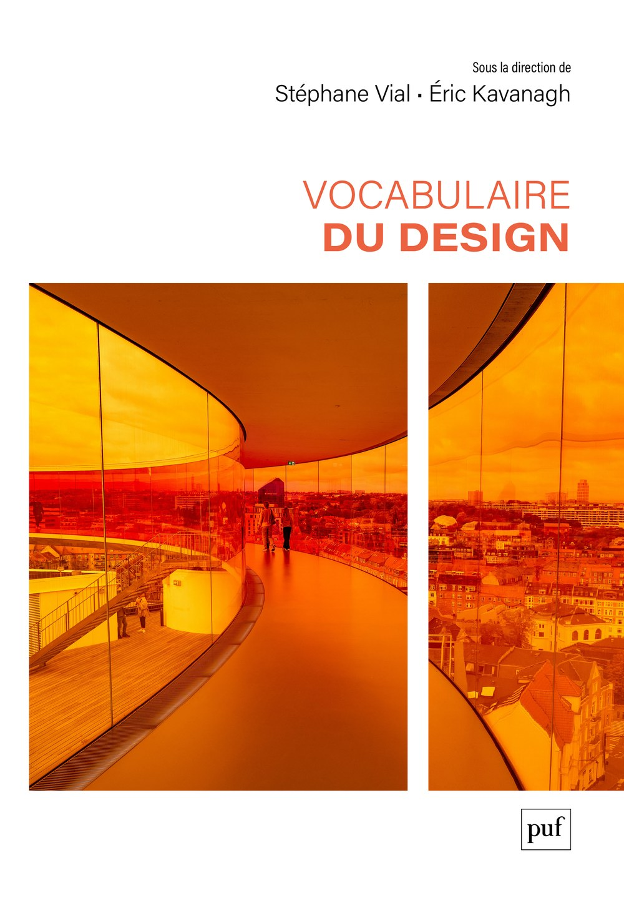

Lancement au Québec
Le plus grand dictionnaire savant du design
Stéphane Vial et Éric Kavanagh
Codirecteurs de l'ouvrage

Déroulement
Stéphane Vial
Trois temps
Temps 1
Pourquoi un vocabulaire du design ?
Le design possède sa propre langue
Une place dans une tradition
Les Presses universitaires de France publient depuis un siècle les dictionnaires savants de toutes les disciplines :
Le design n'en avait aucun.
Pourquoi maintenant
14 ans depuis l’idée, 7 ans de collaboration entre les deux directeurs.
Figer ou libérer la discipline ?
... redouter que la définition du verbe aimer dans les dictionnaires n'empêche les multiples formes d'amour d'exister.
S.V. et É.K., Préambule
Temps 2
Exemples et aperçus, loin des idées reçues
Design thinking
L'idée reçue
Une méthode de réflexion à base de post-its, inventée par des consultants et sans rapport avec le design et le faire.
Ce que dit l'entrée
Deux notions distinctes portent le même nom. Un style cognitif propre aux designers, décrit dès les années 1960, qui réside dans la modélisation de la pensée. Et une approche de gestion et d'innovation, diffusée à partir des années 2000.
Créativité
L'idée reçue
Un don. Une qualité que certains possèdent et d'autres non.
Ce que dit l'entrée
Ni un trait individuel stable, ni la seule originalité. Un phénomène contextuel, distribué et pluriel, qui dépend de collectifs, d'outils, d'environnements, et qui mêle recours aux connaissances et ouverture à l'incertitude.
Thèmes récurrents : une certaine conception du design
Le design comme conception située
Des objets aux relations qu'ils instaurent
L'importance des processus en design
Les enjeux sociaux, éthiques et politiques
Le design comme champ de connaissance
Temps 3
Ce que les mots disent de l'époque
Wicked problems · Rittel et Webber, 1973
Le design a modifié la notion de problème. Les problèmes de design sont instables et nécessitent des arbitrages.
Des mots absents ou rares il y a 20 ans
Éric Kavanagh
L’ouvrage
Un ouvrage de référence de 330 articles.
593
pages
330
articles
38
renvois
1 299
références bibliographiques
dont 1 023 distinctes
Les 91 signataires
Une œuvre collective, avec une majorité de femmes parmi les signataires.
| Signataires | Personnes | % |
|---|---|---|
| Directeurs (Stéphane Vial et Éric Kavanagh) | 2 | 2,2 % |
| Contributrices | 49 | 53,8 % |
| Contributeurs | 40 | 44,0 % |
| Total | 91 | 100 % |
Autour de l’ouvrage : 13 personnes chez l’éditeur (PUF et Humensis) et plusieurs dizaines d’autres (demandes de collaboration, droits, promotion).
Les 450 signatures
Les directeurs portent un peu plus de 4 signatures sur 10. Parmi les autres signataires, les femmes signent davantage que les hommes (148 contre 114).
Une signature, c’est un nom sous un article, comme auteur ou comme collaborateur. Les 330 articles portent 450 signatures.
| Qui signe | Signatures | % |
|---|---|---|
| Les deux directeurs (Stéphane 119, Éric 69) | 188 | 41,8 % |
| Les 49 contributrices | 148 | 32,9 % |
| Les 40 contributeurs | 114 | 25,3 % |
| Total | 450 | 100 % |
Un, deux ou trois signataires par article
Plus de deux articles sur trois sont signés par une seule personne.
| Signataires par article | Articles | % |
|---|---|---|
| 1 signataire | 227 | 68,8 % |
| 2 signataires | 86 | 26,1 % |
| 3 signataires | 17 | 5,1 % |
| Total | 330 | 100 % |
Aucun article ne compte plus de 3 signataires. 37 articles comptent un collaborateur ou une collaboratrice.
Qui signe les 330 articles
Les directeurs signent ou cosignent la moitié des articles. L’autre moitié est l’œuvre des contributeurs et contributrices.
| Articles signés… | Articles | % |
|---|---|---|
| par au moins un des deux directeurs | 167 | 50,6 % |
| uniquement par des contributrices | 82 | 24,9 % |
| uniquement par des contributeurs | 74 | 22,4 % |
| par au moins une contributrice et un contributeur | 7 | 2,1 % |
| Total | 330 | 100 % |
La place des femmes
En dehors des deux directeurs, les femmes sont majoritaires, en nombre de personnes comme en nombre de signatures.
La place des femmes
Les 15 premiers signataires
| Rang | Signataires | Signatures |
|---|---|---|
| 1 | Stéphane Vial (UQAM) | 119 |
| 2 | Éric Kavanagh (Université Laval) | 69 |
| 3 | Jacynthe Roberge (Université Laval) | 20 |
| 4 | Mélanie Tremblay (ENAP) | 14 |
| 5 | Guillaume Blum (ÉTS) | 9 |
| 6-7 | Claudia Déméné (Université Laval) | 8 |
| Serge Pelletier (Université Laval) |
Les 15 premiers signataires
| Rang | Signataires | Signatures |
|---|---|---|
| 8-10 | Laureline Chiapello (UQAC) | 7 |
| Félix Faucher Díaz (ÉTS) | ||
| Stéphane Laurent (Paris 1 Panthéon-Sorbonne) | ||
| 11-15 | Claudia Després (Université Laval) | 6 |
| Ron Filion-Mallette (UQAM) | ||
| Jérôme Lessard (Université Laval) | ||
| Laurence Paquette (Université Laval) | ||
| Thomas Watkin (Nîmes Université) |
Les 450 signatures en trois groupes
15 personnes portent les deux tiers des signatures (298 sur 450). Mais 76 autres personnes ont rendu l’ouvrage possible.
| Groupe | Personnes | Signatures | % |
|---|---|---|---|
| Rangs 1-2 : les directeurs | 2 (2 hommes) | 188 | 41,8 % |
| Rangs 3-15 | 13 (6 femmes, 7 hommes) | 110 | 24,4 % |
| Rangs 16-91 (1 à 5 signatures chacun) | 76 (43 femmes, 33 hommes) | 152 | 33,8 % |
| Total | 91 | 450 | 100 % |
D’où viennent les signataires
Un ouvrage québécois et français avant tout, ouvert à l’Europe et aux Amériques.
| Région | Personnes | % |
|---|---|---|
| Québec | 54 | 59,3 % |
| Europe | 31 | 34,1 % |
| France | 26 | 28,6 % |
| Suisse | 5 | 5,5 % |
| Amériques hors Québec | 6 | 6,6 % |
| États-Unis | 3 | 3,3 % |
| Canada hors Québec | 2 | 2,2 % |
| Brésil | 1 | 1,1 % |
| Total | 91 | 100 % |
Établissement indiqué dans l’ouvrage, au moment de la contribution.
Alain Findeli, rattaché à l’Université de Montréal et à Nîmes Université, est compté au Québec.
Les établissements du Québec
L’UQAM et l’Université Laval réunissent 37 des 91 signataires.
| Établissement | Personnes | % des 91 signataires |
|---|---|---|
| UQAM (avec Stéphane Vial) | 23 | 25,2 % |
| Université Laval (avec Éric Kavanagh) | 14 | 15,4 % |
| Université de Montréal (avec Alain Findeli) | 7 | 7,7 % |
| ÉTS | 4 | 4,4 % |
| UQAC | 2 | 2,2 % |
| Concordia, UQO, UQAT, ENAP (1 chacune) | 4 | 4,4 % |
| Total Québec | 54 | 59,3 % |
Les établissements d’Europe
La HEAD – Genève est le premier établissement européen de l’ouvrage.
| Établissement | Pays | Personnes | % des 91 signataires |
|---|---|---|---|
| HEAD – Genève (HES-SO) | Suisse | 5 | 5,5 % |
| Nîmes Université | France | 3 | 3,3 % |
| Université Paris 1 Panthéon-Sorbonne | France | 3 | 3,3 % |
| École nationale supérieure des arts décoratifs (EnsAD) | France | 3 | 3,3 % |
| IRCAM | France | 3 | 3,3 % |
| Université de Strasbourg | France | 2 | 2,2 % |
| La 27e Région | France | 2 | 2,2 % |
| 10 autres établissements (1 chacun) | France | 10 | 11,0 % |
| Total Europe | 31 | 34,1 % |
La contribution de l’Université Laval
L’Université Laval est présente dans près d’un article sur trois.
16 signataires (dont 13 femmes), 144 signatures, présents dans 107 des 330 articles. Sauf mention, toutes ces personnes sont à l’École de design.
| Personne | Signatures | Entrées |
|---|---|---|
| Éric Kavanagh | 69 | Affordance + 68 autres |
| Jacynthe Roberge | 20 | Créativité, Design d’interaction, Design émotionnel, Émotion, Ergonomie, Expertise, Idéation, Idée, Intuition, Lieu, Maquette, Opportunité, Outil, Pédagogie du design, Persona, Prototypage, Prototype, Recherche utilisateur, Satisfaction, Structure |
| Claudia Déméné | 8 | Analyse du cycle de vie, Autoproduction, Biomimétisme, Cycle de vie, Écoconception, Obsolescence, Recyclage, Réutilisation |
La contribution de l’Université Laval
| Personne | Signatures | Entrées |
|---|---|---|
| Serge Pelletier | 8 | Attention, Cognition, Décision (prise de), Erreur, Mémoire, Modèle mental, Motivation, Performance |
| Claudia Després | 6 | Cahier des charges, Commande, Design critique, Itération, Matériau, Validation |
| Jérôme Lessard | 6 | Document, Gestalt, Infographie, Portfolio, Structure, Visibilité |
| Laurence Paquette | 6 | Attente, Design de service, Empathie, Point de contact, Service, Temps |
| Isabel Prochner* | 5 | Diversité, Évaluation, Facteurs humains, Genre, Praticien réflexif |
| Audrey Desjardins* | 3 | Expertise, Non-expert, Portfolio |
La contribution de l’Université Laval
| Personne | Signatures | Entrées |
|---|---|---|
| Andréanne Fortin (Information et communication) | 3 | Charge cognitive, Rédaction, Texte |
| Julie Royer | 3 | Design de marque, Identité visuelle, Logo |
| Océane Mallette | 2 | Design comportemental, Écosystème |
| Marie-Josée Saint-Pierre | 2 | Animation, Féminisme |
| Maude Bouchard | 1 | Couleur |
| Johanne Brochu (ESAD) | 1 | Urbanisme |
| Élie-Anne Lachance | 1 | Incertitude |
* Aujourd’hui à l’École de design de l’Université Laval. L’ouvrage les rattache à Virginia Tech (Isabel Prochner) et à la University of Washington (Audrey Desjardins). Sans elles, l’Université Laval compte 14 signataires, comme à la diapo 10.
La contribution de l’UQAM
L’UQAM est présente dans 44 % des articles.
23 signataires (dont 10 femmes), 157 signatures, présents dans 145 des 330 articles. Sauf mention, toutes ces personnes sont à l’École de design.
| Personne | Signatures | Entrées |
|---|---|---|
| Stéphane Vial | 119 | Agence + 118 autres |
| Ron Filion-Mallette | 6 | Design spéculatif, Espace, Médiation, Réalité augmentée, Réalité mixte, Réalité virtuelle |
| Nicolas Reeves | 5 | Design génératif, Imagination, Numérique, Science, Technologie |
| Amandine Alessandra | 3 | Image, Langage visuel, Typographie |
| Simon Séguin | 3 | Simplicité, Skeuomorphisme, Système de design |
La contribution de l’UQAM
| Personne | Signatures | Entrées |
|---|---|---|
| Aymeric Alandry | 2 | Ingénierie, Machine |
| Anne-Marie Broudehoux | 2 | Espace, Patrimoine |
| Janice Nadeau | 2 | Dessin, Illustration |
| Sylvain Allard | 1 | Design d’emballage |
| Geneviève Angio-Morneau | 1 | Design d’exposition |
| Maurice Cloutier | 1 | Design de l’environnement |
| Catherine D’Amours | 1 | Décolonisation du design |
| Patrick Evans | 1 | Design nordique |
| Ying Gao | 1 | Design de mode |
La contribution de l’UQAM
| Personne | Signatures | Entrées |
|---|---|---|
| Thomas-Bernard Kenniff | 1 | Espace public |
| Elizabeth Laferrière | 1 | Motion design |
| Louis-Charles Lasnier | 1 | Design d’exposition |
| Réjean Legault | 1 | Design de l’environnement |
| Carole Lévesque | 1 | Dessin |
| Vanessa Mardirossian (École supérieure de mode) | 1 | Design textile |
| Céline Poisson | 1 | Design d’événement |
| Guillaume Sasseville | 1 | Mobilier |
| Steve Vezeau | 1 | Design de transport |
Invité·e·s
Visitez le site web de l'ouvrage !
vocadesign.uqam.ca
| Se déplacer | |
|---|---|
| → ↓ Espace | Diapositive suivante |
| ← ↑ | Diapositive précédente |
| Début / Fin | Première / dernière diapositive |
| R | Revenir à la première diapositive |
| G | Aller à une diapositive par son numéro |
| Afficher | |
| F | Plein écran |
| Échap | Fermer la recherche ou l'aide · vue d'ensemble |
| P B . | Écran noir |
| S | Rechercher un mot dans les diapositives |
| ? | Cette aide |